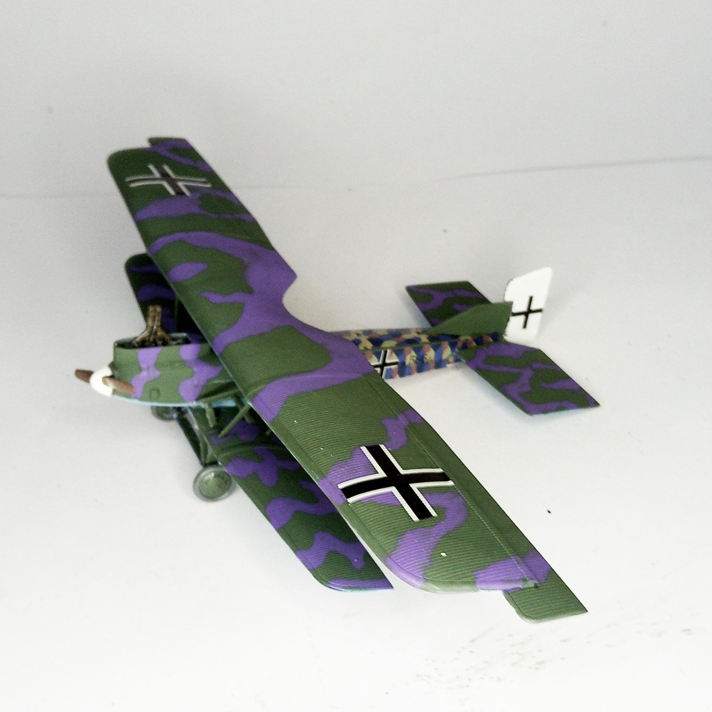

Aerei · scale model archive
Junkers D1
Junkers D1 — Kit: Roden, Scale: 1/72. 5180/18 Western Front Autumn 1918 Large ground attack biplane with cantilever wings, nice aircraft shape #1/72 #Roden

Photo gallery
English description
5180/18 Western Front Autumn 1918
Large ground attack biplane with cantilever wings, nice aircraft shape
#1/72 #Roden
Descrizione italiana
5180/18 Western Front Autumn 1918.
Large ground attack biplane con cantilever ali, bell’aereo forma.